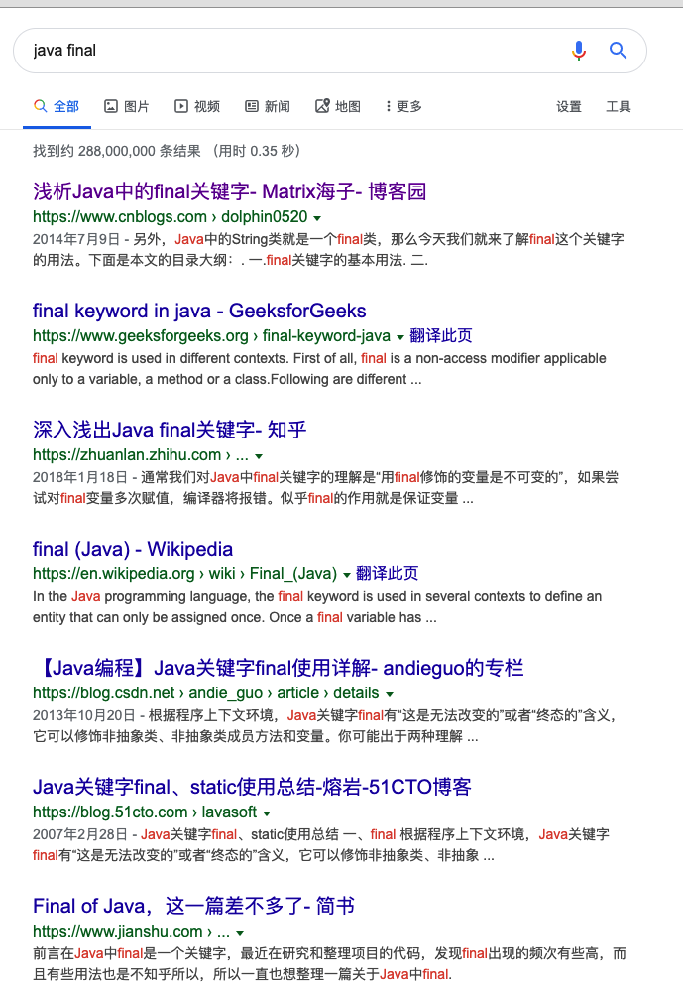

前面章节中，我们详细讲了String、int和Integer原始数据类型里面都提到了final，那这个final到底有什么作用呢？
让我们google下看看？

看到了吧，网络上此类资料很多，写到这里我现在开始反思既然你要做一个java基础系统的分享培训，那此类资料很多很多，你又为何重新还要做呢？把这些资料归纳下、收集然后分发出去让他们学习不就好了吗？
讲真的，确实有过这样的想法。但是，真是因为网络上资料过于多种多样，如果一股脑的不加筛选的去汇总，会发现资料与资料直接可能存在冲突，而且有的可能分享的也不是很对(自己看来)，如果要详细筛选，那不如自己归纳总结，把自己认为是重点分享出来了，一则做一个系统的筛选和分享、二则可以巩固自己的知识。
所以，基于以上，CoreJava大概会有三十多节，我尽量在年前全部整理完成。年后开始DDD和微服务。
好了，废话不多说了。回到我们的正题：final到底是什么？
final 修饰
- final可修饰类
- final可修饰方法
- final可修饰变量
修饰类则代表其不可被继承、修饰方法则代表其不能被重写、修饰变量则代表其不可被修改
思考题：
final修饰类型和方法好理解，但是修饰变量有点不好理解，请看下面代码：
1 | final int a = 1; |
结合下我们之前将的基础数据类型以及其拆箱和装箱，思考下这4种情况会怎样？
相信你已经有答案了，上述结论：
- int是基础数据类型，不是对象，就对应一个值，如果其是final的则表示其不可修改；
- Integer我们之前章节讲过，也分析过源码，其内部有个value，仔细看代码的小伙伴发现了value是final的int，所以，无论其是否使用了
IntegerCache其都是无法修改的； - final如果修饰一个对象，则对象里面的值是可以任意修改的，但是不可以把
u2的引用赋值给u1,也就是说final的u1其内存引用是不可改变的。
这下子世界清静了吧？那再来个思考题：
1 | final List<String> list1 = new ArrayList<>(); |
好吧。你或许已经知道了List.of()的用法了，它就是为了获取一个immutable的List。
这里我们再次接触了immutable，第一次接触它我们是在String、StringBuffer、StringBuilder章节中得知，让我们再结合下final再回顾下什么是immutable，如何实现immutable类，回想下String这个特殊的类:
- 显然只有
final其不等价于immutable，上面很多例子已经证明； - class必须是final的，这样无法再被继承了；
- class的所有的成员变量都是private final类型的，而且不能实现
setter方法，也最好不要实现getter方法； - 构造对象时，变量使用深拷贝而不是使用直接赋值；
知识扩展
参考阅读：Java 浅拷贝、深拷贝，你知多少？
好了，final就到这里吧。
后面的实际工作当中我们用到它的机会还有很多很多，比如在匿名内部类里面引用局部变量时，其必须是final类型的等等；
到时候我们再专门讲吧。